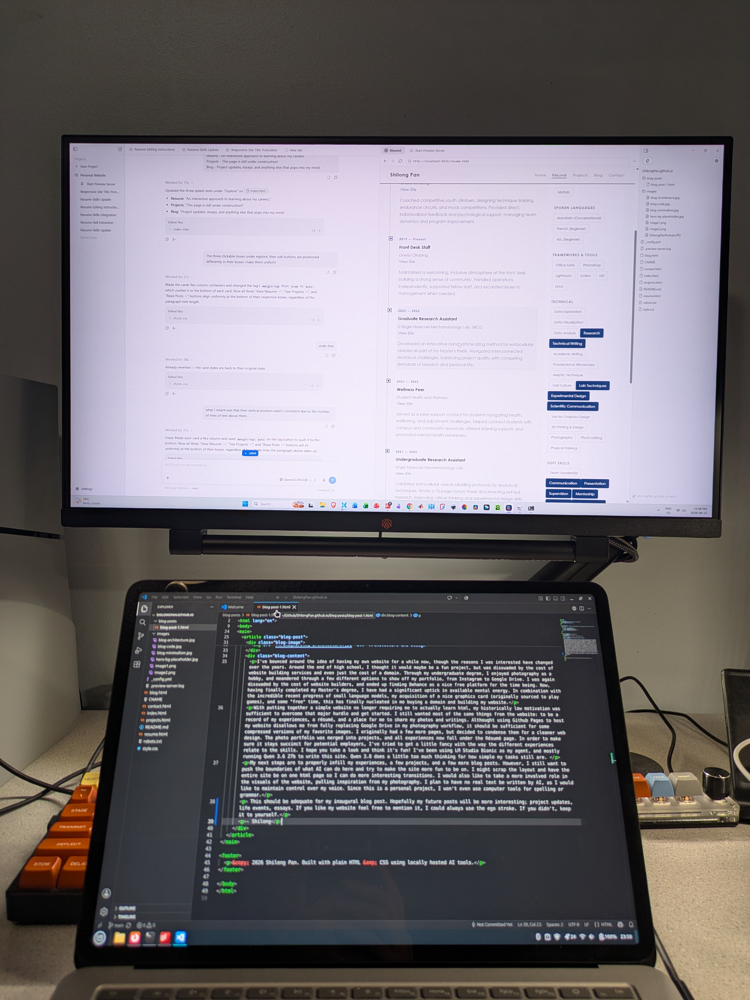

Building a Website

I've bounced around the idea of having my own website for a while now, though the reasons I was interested have changed over the years. Around the end of high school, I thought it would maybe be a fun project, but was dissuaded by the cost of website building services and even just the cost of a domain. Through my undergraduate degree, I enjoyed photography as a hobby, and meandered through a few different options to show off my portfolio, from Instagram to Google Drive. I was again dissuaded by the cost of website builders, and ended up finding Behance as a nice free platform for the time being. Now, having finally completed my Master's degree, I have had a significant uptick in available mental energy. In combination with the incredible recent progress of small language models, my acquisition of a nice graphics card (originally sourced to play games), and some "free" time, this has finally nucleated in me buying a domain and building my website.
With putting together a simple website no longer requiring me to actually learn html, my historically low motivation was sufficient to overcome that major hurdle and get started. I still wanted most of the same things from the website: to be a record of my experiences, a résumé, and a place for me to share my photos and writings. Althought using Github Pages to host my website disallows me from fully replacing Google Drive in my photography workflow, it should be sufficient for some compressed versions of my favorite images. I originally had a few more pages, but decided to condense them for a cleaner web design. The photo portfolio was merged into projects, and all experiences now fall under the Résumé page. In order to make sure it stays succinct for potential employers, I've tried to get a little fancy with the way the different experiences relate to the skills. I hope you take a look and think it's fun! I've been using LM Studio Bionic as my agent, and mostly running Qwen 3.6 27b to write this site. Qwen 3.8 does a little too much thinking for how simple my tasks still are.
My next steps are to properly infill my experiences, a few projects, and a few more blog posts. However, I still want to push the boundaries of what AI can do here and try to make the site more fun to be on. I might scrap the layout and have the entire site be on one html page so I can do more interesting transitions. I would also like to take a more involved role in the visuals of the website, pulling inspiration from my photography. I plan to have no real text be written by AI, as I would like to maintain control over my voice. Since this is a personal project, I won't even use computer tools for spelling or grammar.
This should be adequate for my inaugural blog post. Hopefully my future posts will be more interesting; project updates, life events, essays. If you like my website feel free to mention it, I could always use the ego stroke. If you didn't, keep it to yourself.
- Shilong